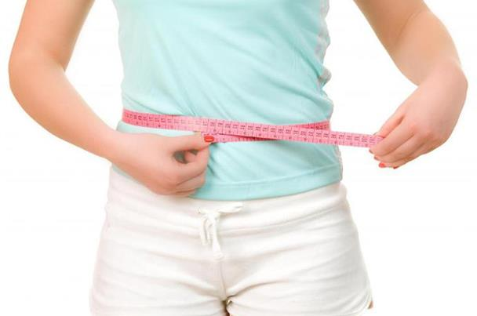

<!-- We don't need full layout here, because this page will be parsed with Ajax-->
<!-- Top Navbar-->

<div class="pages">
  <!-- Page, data-page contains page name-->
  <div data-page="about" class="page">
    <!-- Scrollable page content-->
    <div class="page-content">
      <div class="navbar">
  <div class="navbar-inner">
    <div class="left"><a href="#" class="back link"> <i class="icon icon-back"></i><span>العوده </span></a></div>
    <div class="center sliding">   </div>
    <div class="right">
       
      <!-- Right link contains only icon - additional "icon-only" class--><a href="#" class="link icon-only open-panel"> <i class="icon icon-bars"></i></a>
    </div>
  </div>
</div>
      <div class="content-block presentcon">
<div class="row">
  <div class="col-100">

<h4>     تقنية جديدة لإذابة الدهون في وقت قياسي   :</h4>

عملية إذابة الدهون وخسارة الوزن قد تستغرق وقتاً طويلاً ومجهوداً كبيراً، إذ عليكِ إتباع حمية وممارسة التمارين لفترة ليست بقصيرة حتى تتمكّني من ملاحظة الفرق في جسمكِ وتحقيق هدفكِ. لكن إذا كنت من محبات الأمور السهلة والسريعة، فالتقنيات التجميل المتقدمة ستنقذكِ وستخلصكِ من الدهون من دون مجهود وفي وقتٍ قصير.
اليوم نعرفكِ على تقنية غير جراحيّة جديدة معروفة باسمCoolSculptingأي النحت البارد، ستخلصك من الدهون في أيّ مكان في جسمكِ في وقت قياسي.
سواء كنتِ تعانين من الدهون المكدسة عند البطن، الأرداف، الفخدين أو حتى عند الذراعين والذقن ستتمكنين من التخلص منها بسهولة. تقنية النحت البارد تستهدف الخلايا الدهنية، تجمّدها ثمّ تذيبها ليتخلّص منها الجسم في ما بعد عن طريق البول. هذه الطريقة غير الجراحيّة تستهدف الدهون فقط من دون إلحاق الضرر بخلايا أخرى أو بالأعصاب، إذاً هي آمنة للغاية ويمكن لأيّة سيّدة الخضوع لها لنحت المنطقة التي تريدها في جسمها.
كل جلسة تستغرق ما بين الـ35 والـ60 دقيقة بحسب المنطقة التي تريدين إذابة الدهون فيها. في الدقائق الأولى، ستشعرين بالبرد والقليل من الانزعاج لكن سرعان ما تتخدّر المنطقة المُعالجة ويتلاشى هذا الشعور. يمكنكِ قراءة كتاب أو مشاهدة التلفاز خلال الجلسة، وعند انتهائها يمكنكِ العودة إلى حياتكِ الطبيعيّة فوراً. ستلاحظين النتيجة بعد 3 أسابيع، لكن الفرق الشاسع سيظهر بعد شهرين إذ أنّ جسمكِ يواصل عملية القضاء على الخلايا الدهنيّة بعد الجلسة.
بهدف تسريع ظهور النتائج والمحافظة عليها، من الضروري أن تتنبهي إلى نظامكِ الغذائي وتتجنّبي المأكولات الغنيّة بالدهون التي تعرقل عمل التقنيّة وبالتالي لا تمنحكِ النتيجة التي تريدينها.
  </div>
</div>

<div class="row t">
  <div class="col-100">

  </div>
</div>
   </div>
    </div>
  </div>
</div>